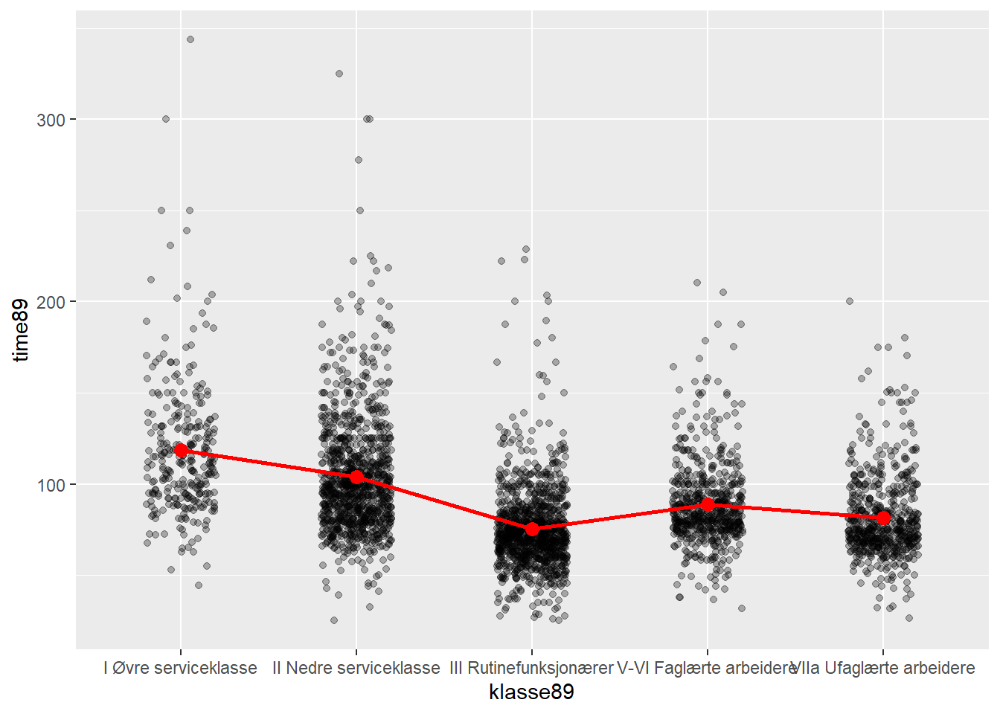

library(tidyverse)
library(gtsummary)9 Lineær regresjon med kategoriske variable
I samfunnsvitenskapen har vi ganske ofte kategoriske variable både som forklaringsvariable og utfallsvariable, eller en kombinasjon. I en regresjon vil vi behandle kategoriske variable dem som om de er tall på kontinuerlig akse, men der det typisk bare finnes to verdier: 0 og 1. Dette kalles en dummyvariabel eller en indikatorvariabel.
Når man bruker kategoriske variable i en lineær regresjon er det derfor ikke egentlig noe nytt. Det som står i boken om kontinuerlige variable gjelder også for kategoriske variable (i hvert fall for alle praktiske formål som dekkes for dette kurset). Dette dokumentet forklarer først hva en dummy-variabel er for noe, hvordan det brukes som forklaringsvariable og til sist hvordan det brukes som utfallsvariabel.
9.1 Dummy-variable
Hvis det er to verdier vil vi typisk gi den ene kategorien verdien 0 og den andre kategorien 1. Dette kalles en «dummy variabel» eller en «indikator variabel». For eksempel vil et datasett ofte ha en variabel for kjønn med verdiene «Mann» og «Kvinne». Da kan vi la mann få verdien 0 og kvinne verdien 1. Ofte vil man da gi variabelen et navn som indikerer hvilken verdi som er 1. Så i dette eksempelet er det hensiktsmessig å gi den nye variabelen navnet «Kvinne». I dette eksempelet vil man også kunne si at variabelen er en «dummy for kvinne» (altså: den kategorien som får verdien 1).
Det spiller ingen rolle hvilken kategori som får verdien 0 og 1. I dette eksempelet kunne man like gjerne gjort det motsatt, og latt det være en «dummy for mann». Da ville det være naturlig å kalle variabelen «mann» i stedet for «kvinne». Som vi skal se nedenfor vil det bare påvirke fortegnet når vi bruker variabelen i en regresjonsanalyse.
I datasettet abu89 er variabelen “female” en slik variabel som har verdiene 0 eller 1, og der 0 betyr “mann” og 1 betyr “kvinne”.
| Kjønn | Female |
|---|---|
| Mann | 0 |
| Kvinne | 1 |
| Kvinne | 1 |
| Mann | 0 |
| Kvinne | 1 |
| Kvinne | 1 |
| Kvinne | 1 |
| Mann | 0 |
Noen ganger har vi forklaringsvariable med flere enn to kategorier. Det kan vi løse på en tilsvarende måte ved å lage flere dummy-variable. Et eksempel kan være sosial klasse. I datasettet abu89 er det fem kategorier.
En dummy-variabel har bare to kategorier: 0 og 1, men vi kan lage flere dummy-variable. Vi kan lager en ny variabel «klasse II» som har verdien 1 hvis personen tilhører denne klassen og 0 ellers. Altså en dummy. Så kan vi lage en ny variabel «Klasse III» som har verdien 1 hvis personen tilhører denne klassen og 0 ellers. Slik kan man lage en dummy-variabel for hver av kategoriene. Da har vi altså flere dummy-variable som til sammen fanger opp informasjonen i den opprinnelige variabelen.
| Utdanning | Klasse II | Klasse III | Klasse V-VI | Klasse VII |
|---|---|---|---|---|
| Klasse I | 0 | 0 | 0 | 0 |
| Klasse II | 1 | 0 | 0 | 0 |
| Klasse III | 0 | 1 | 0 | 0 |
| Klasse V-VI | 0 | 0 | 1 | 0 |
| Klasse VII | 0 | 0 | 0 | 1 |
Merk at her er det ingen dummy for “Klasse I”. Denne gruppen brukes som referansekategori slik at estimatene for de andre dummyene blir tolkbare som forskjellen til denne referansekategorien. Mer om det siden, men man kan velge å bruke en annen referansekategori hvis man vil.
La oss først se på et plot. Her er det brukt en jitter-plot. Den røde linjen viser endring i gjennomsnitt mellom de kategoriene. En regresjonsanalyse vil gi slike estimater på differanser, men det er enklest hvis alle endringene er i forhold til samme referansekategori.
lmest <- lm(time89 ~ klasse89, data = abu89)
abu89x <- abu89 %>%
filter(!is.na(klasse89), !is.na(time89)) %>%
mutate(smooth = predict(lmest, newdata = .)) %>%
group_by(klasse89) %>%
mutate(gr_snitt = mean(time89))
ggplot( abu89x, aes(x =klasse89, y = time89))+
geom_jitter(alpha = .3, width = .2)+
geom_point(aes(y=gr_snitt), col = "red", size = 3)+
#geom_hline(yintercept = mean(abu89x$time89, na.rm = TRUE))+
geom_line(aes(x = as.numeric(klasse89), y = smooth), col = "red", linewidth = 1) 
Den generelle regresjonsligningen skrives som y=a+bx, der \(x\) er forklaringsvariabelen. Regresjonskoeffisienten, \(b\), tolkes som hvor forskjellen i gjennomsnittet på utfallsvariabelen, \(y\), mellom de som er en enhets forskjell på \(x\)-variabelen.
9.2 Linjeær sannsynlighetsmodell
I samfunnsvitenskapen er utfallsvariabelen ganske ofte kategorisk. I en regresjon vil vi behandle kategoriske variable dem som om de er tall på kontinuerlig akse, også der det typisk bare finnes to verdier: 0 og 1. Dette kalles en dummyvariabel eller en indikatorvariabel.
Når man bruker kategoriske variable i en lineær regresjon er det derfor ikke egentlig noe nytt. Det som står i boken om kontinuerlige variable gjelder også for kategoriske variable (i hvert fall for alle praktiske formål som dekkes for dette kurset).
Dummy-variable Hvis det er to verdier vil vi typisk gi den ene kategorien verdien 0 og den andre kategorien 1. Dette kalles en «dummy variabel» eller en «indikator variabel». For eksempel vil et datasett ofte ha en variabel for kjønn med verdiene «Mann» og «Kvinne». Da kan vi la mann få verdien 0 og kvinne verdien 1. Ofte vil man da gi variabelen et navn som indikerer hvilken verdi som er 1. Så i dette eksempelet er det hensiktsmessig å gi den nye variabelen navnet «Kvinne». I dette eksempelet vil man også kunne si at variabelen er en «dummy for kvinne» (altså: den kategorien som får verdien 1). Det spiller ingen rolle hvilken kategori som får verdien 0 og 1. I dette eksempelet kunne man like gjerne gjort det motsatt, og latt det være en «dummy for mann». Da ville det være naturlig å kalle variabelen «mann» i stedet for «kvinne». Som vi skal se nedenfor vil det bare påvirke fortegnet når vi bruker variabelen i en regresjonsanalyse.